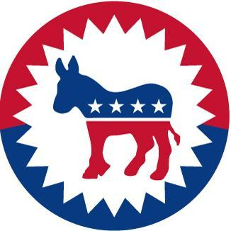

major Accomplishment
 Death of Osama Bin Laden |
Secretary of State |
|  Presidential Nomination |
US Senator |
|
biography
Hillary Clinton was born on October 26, 1947,
in Chicago, Illinois, going on to earn her law degree from Yale University. She married
fellow law school graduate Bill Clinton in 1975. She later served as first lady from 1993 to
2001, and then as a U.S. senator from 2001 to 2009. In early 2007, Clinton announced her
plans to run for the presidency. During the 2008 Democratic primaries, she conceded the
nomination when it became apparent that Barack Obama held a majority of the delegate vote.
After winning the national election, Obama appointed Clinton secretary of state. She was
sworn in as part of his cabinet in January 2009 and served until 2013. In the spring of 2015,
she announced her plans to run again for the U.S. presidency. In 2016, she became the first
woman in U.S. history to become the presidential nominee of a major political party. After a
polarizing campaign against GOP candidate Donald Trump, Clinton was defeated in the general
election that November. Source:Biography
|